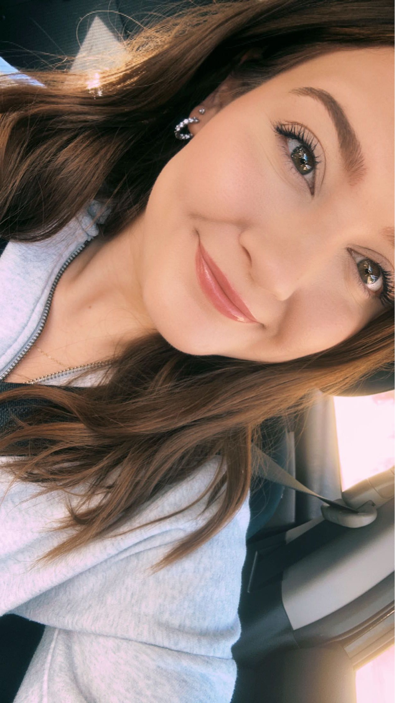

Landing Page
Summary Introduction
Megan, a 23-year-old from North Platte, Nebraska, is a selfless individual with a passion for inventing products to benefit millions. She balances her roles as a part-time secretary and full-time student at Mid Plains Community College, soon transferring to Arizona State University for mechanical engineering. Megan aims to work in product development/testing to gain insights for her inventions. In her free time, she enjoys nail art, running for fitness, and traveling, having visited multiple states in 2023. Her 2024 goals include excelling in math, losing weight, traveling internationally, and completing a marathon in March. Megan also loves pink!
Most Interesting Interview Answers
-
Question: What hobbies do you have, if any?
- Answer: I like to do nails and am big into fitness. I have a large DIY nail collection that allows me to do different designs and nail types. I also like to run everyday to try and keep good health.
-
Question: What are your professional career goals?
- Answer: I want to invent something that benefits millions of people, and in doing so I want to work for myself.
-
Question: What do you hope to have accomplished by
the end of your career?
- Answer: I hope to have invented something that benefits millions of people and I hope that the success from the invention can fund many more inventions with the sole purpose of helping others.